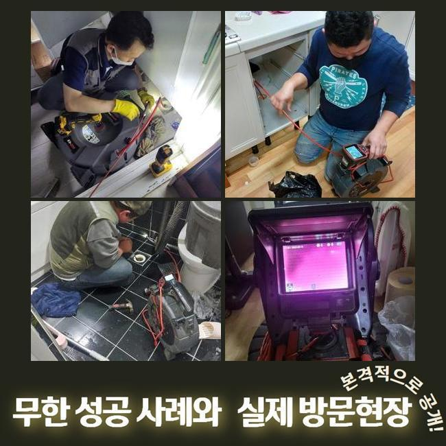
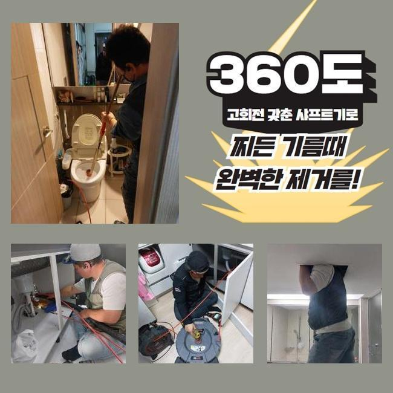
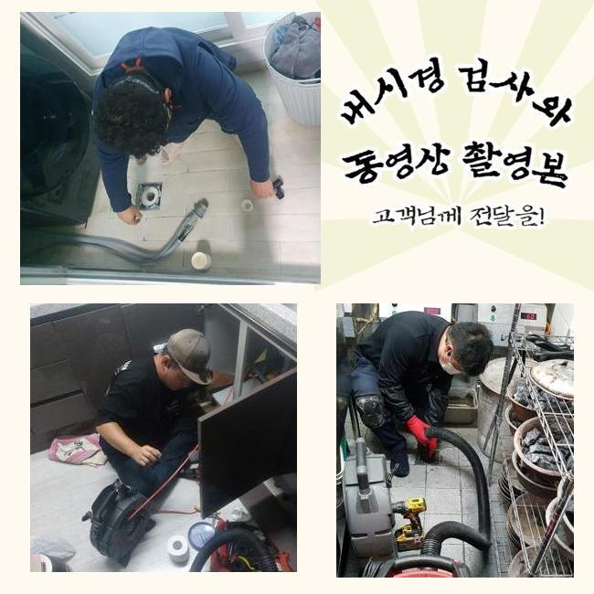
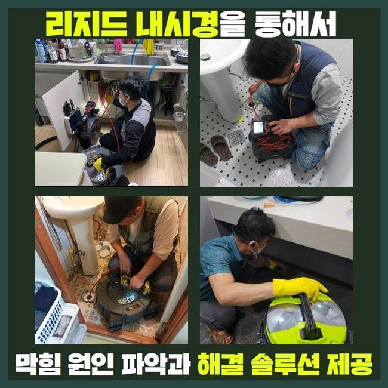
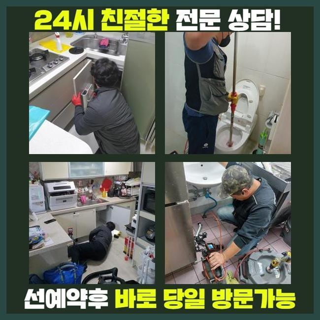
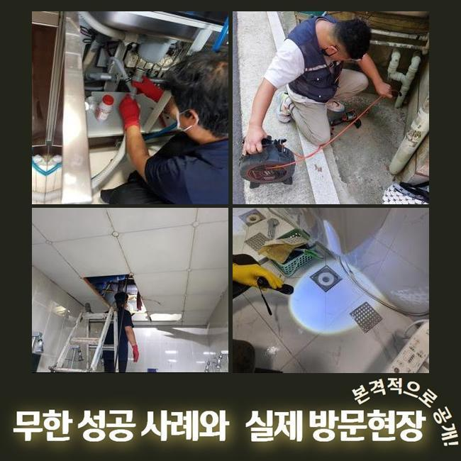
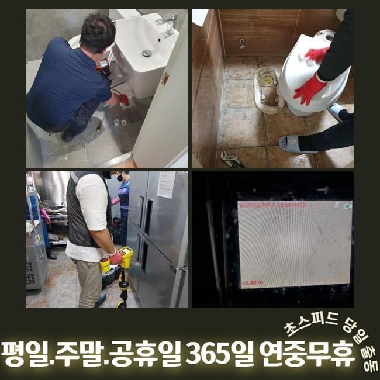

🏠 미추홀구 학익동화장실막힘 문학동 횡주관청소 출장설비
용인 싱크대막힘 전문 시공 후기

📋 작업 개요
- 위치: 용인
- 서비스 유형: 싱크대막힘, 변기막힘, 하수구막힘, 배관막힘, 누수수리, 역류해결, 뚫는업체, 배관청소, 고압세척, 배관보수, 악취차단
- 작업 일시: 2025. 3. 23. 22:26
- 업체명: 하수구수사대 (010-5615-2118)
🔍 문제 상황
미추홀구 학익동화장실막힘 문학동 횡주관청소 출장설비
하수구 물이 정상 배출이 안되면 일상 속의 고난을 체감하게 됩니다
일반적 사례를 소개하면 부엌 안의 싱크대가 잔뜩 오염돼서 계속 물이 차오르는 사태도 많이 일어나며 욕실의 배수구나 변기 베란다 공간에 물이 쌓여서 이용에서의 어려움이 찾아오기도 합니다
공동주택 거주자에게서 의뢰를 받은 상황이라면 개인 세대상의 오류라서 집안에서 여러 기기를 가동하여 뚫어냅니다
공통적으로 사용하는 관로라면 연립주택 건물일 때는 서비스 업체를 불러서 규칙적으로 클리닝을 받기 때문에 고장이 나는 일은 그나마 적은 편이에요
하지만 상가라면 이런 막힘이 생겨날 확률이 다소 높게 나타납니다
이번 막힘 케이스는 상업용 건물 안에 자리한 주요배관이 막히는 바람에 공용 화장실과 가게 안의 싱크대 마다 고장이 나서 제일 빠르게 와달라고 문의를 넣어주셨습니다
자세한 내막을 보니 문제가 됐다고 보이는 메인관의 위치가 파악돼서 진행을 시작했습니다
메인관이 가로막힌다면 집들에 설치되어 있는 세대 배관을 원인으로 추정하는 것 보다는 더 굵은 배관로에 변형이나 마모가 생겼거나 이물질이 한껏 침투해서 배수기능이 마비되었을 가능성이 더 짙습니다

🔎 원인 분석
💡 전문가 진단: 정밀 진단 장비를 사용하여 슬러지의 고착 여부를 판명하고 타격/세척 작업을 실시했습니다.
굵은 줄기가 되는 관로부터 통로를 내고 완성되면 소규모의 파이프 내까지 정화합니다
천장 내부에 감춰진 시설물이었기 때문에 사다리를 타고 올라가서 보수하기로 정했고 꽉 막힌 하수도 막힘 해결책이 될 장비를 끌고가서 세팅했습니다
위쪽만 관통한다고 해도 심층부 영역까지는 처치되지 못해서 메인 파이프를 관리할 때에는 관로의 중앙 부근까지 제대로 뚫어내야 해요
소재구를 직접 찾아서 여의치 않다면 타공해서 원활한 하수도 작업이 가능할 작업 환경을 만듭니다
배관 용도로 만들어진 내시경기로 접근이 어려운 배관의 여기저기를 살펴보았습니다
내제된 오물의 양과 물의 이동을 꽉 막아버렸던 이유가 무엇인지 작업에 당장 들어가기 전에 판단해야 시공 우선순위를 설정할 수 있게 됩니다
메인배관 쪽 오류는 보편적으로 배관 크기가 폭 넓은 형태라서 소규모의 주거지에 활용하게 되는 단순한 석션장비로는 소용이 없습니다
노즐 길이가 아래까지 진입하지 못해서 흡입력도 다소 뒤떨어집니다
기름 슬러지를 분쇄해서 제거할 수 있게 돕는 걸 마무리 짓는 샤프트기도 마찬가지로 오래 걸리며 진입 홀을 다수 뚫어야해서 곤란할 것 같았어요

🔧 작업 과정
상가 내에서 활용하는 하수구 통수과정이 이뤄지지 못하면 빠른 세정에 들어가서 설비를 원래대로 고쳐야 합니다
넓은 곳에는 고압수를 통해 여기저기에 붙어있는 찌꺼기를 완전히 제거될 수 있게끔 세척함으로써 수로 내부를 말끔하게 만들어줘야만 거듭 일어나는 하수구 이슈를 탈피할 수 있는 것입니다
하수구가 틈도 없이 차버리면 본격적인 청소작업을 실시하기가 난해할 수 있으므로 처음에는 이물질을 수거하는 스프링기를 써서 제일 꽉 찬 구역을 풀리도록 건드려서 통수가 되게끔 해주고 본단계인 하수구 세척을 나아가기로 했습니다
본장비를 도달시키기 위해 기름기가 빼곡한 지점에 틈을 만들고 확장시켜나가서 경로를 확보했습니다
오늘 보여드린 상가는 안에도 여러 음식가게들이 운영되고 있었고 그만큼 기름기도 많이 물과 함께 방출되다보니 하수구 통로에 기름층이 코팅된 상황이었습니다
끓는 물을 들이부어도 기름기는 개선될수 없기때문에 쌓인지 오래될수록 석회화가 이뤄져서 돌덩이처럼 견고한 장애물이 되고 맙니다
무른 성질을 띠고 있을 때 청소 시공을 수행하지 않고 누적되는걸 내버려둔다면 입구 부근에서부터 주변으로 퍼져나가면서 원형 통로가 꽉 막혀서 하수 배출 자체가 전적으로 이뤄지지 않게 되어버려요
냄새까지 유발하는 슬러지들을 싹 클렌징을 해주는 방법은 고압세척을 쓰는 것이며 특유의 파워 덕택에 간편한 투자로 오물이 정복한 배수관을 새것처럼 만들 수 있었네요
지저분하게 접착된 물질이 세찬 물줄기로 인하여 사라져가는 양상을 카메라 장치를 넣어서 검사하면서 진행해나갔어요
움직임이 전혀 없었던 커다란 집합체가 자취를 감추기 시작했으며 작은 입자만 겨우 떠다니는 상태로 보였습니다
고압세척의 경우에는 상황에 따라 다를 수 있지만 의심되는 장애요소가 있는 곳들을 모조리 세척을 해주어야만 또다시 차단이 되는 등의 불상사가 일어나지 않습니다
냄새나는 기름물질을 고압수를 통해 분해하고 꾸준히 활용해온 내시경으로 다양한 구간들을 탐색하며 깨끗한 상태로 탈바꿈됐나 봤습니다
초반에 하수구를 관측해봤을 때는 빈틈이 아예 없다싶을 정도로 오염이 됐었던 시설물이지만 다수의 기구들을 활용한 처리를 거쳤더니 모든 유해요소가 사라진 정비가 완료된 작업물을 받아보게 됐네요
추가적 막힘이 있는지 보려고 물을 받아서 내려보면서 하수가 유연하게 배출되는 전후 변화를 속시원하게 명백히 짚어본 이후에 시공의 마무리를 안내해드렸습니다


✅ 작업 완료
아까 장비를 배치하기 위해서 타공해준 홀들은 윗부분을 커버해줄 테이프로 확실하게 보호하여 누수문제가 나타나지 않게 조치를 취했습니다
올스탑이 되어버린 배수구문제로 많은 곤란함이 있었던 건물의 한 매장에서 물이 전혀 이동하지 못하고 거기다 싱크대 역류까지 신통방통하게 고쳐드리고 사무실로 향했습니다
배관의 폭이 크다면 쉬운 방식으로 낫기 어려운 사안이며 단순하게 접근해서 무대포로 작업한다가 기초설비에 문제가 확대되는 사례도 종종 발생합니다
주거시설을 포함해서 복잡다단한 상가빌딩이라도 적절한 원인 분석과 시공으로 말끔히 손봐드리고 있사오니 개선을 해보셨으면 좋겠습니다




⚠️ 베란다 누수 및 방수 관리 방법
- ✅ 비가 많이 올 때 창틀 주변이나 아래층 천장에 얼룩이 생기는지 정기적으로 확인해 보세요.
- ✅ 우수관 주변 실리콘 마감이 들뜨거나 깨진 틈새가 있는지 손상 여부를 수시로 체크하세요.
- ✅ 베란다 바닥 타일의 줄눈(메지)이 소실되면 그 틈으로 물이 침투하여 누수가 유발됩니다.
- ✅ 누수 의심 증상 발견 시 방치하면 아래층 손실이 커지므로 즉시 전문가의 진단을 받으십시오.
💡 핵심 정리
- 확실한 장비 작업(내시경 점검 및 샤프트 스케일링)으로 원인을 뿌리 뽑습니다.
- 작업 후 1년 이내에 동일한 부위 재발 시 100% 무상 A/S 서비스를 보장합니다.
- 서울 · 경기 · 인천 전 지역에 24시간 언제든 긴급 출동할 수 있도록 항시 대기 중입니다.
❓ 자주 묻는 질문 (FAQ)
🚨 용인 싱크대막힘 문제로 고민이신가요?
정확한 원인 진단과 확실한 시공으로 재발 없는 해결을 약속드립니다.
24시간 긴급 출동 | 서울 · 경기 · 인천 전지역 | 1년 내 재발 시 무상 A/S